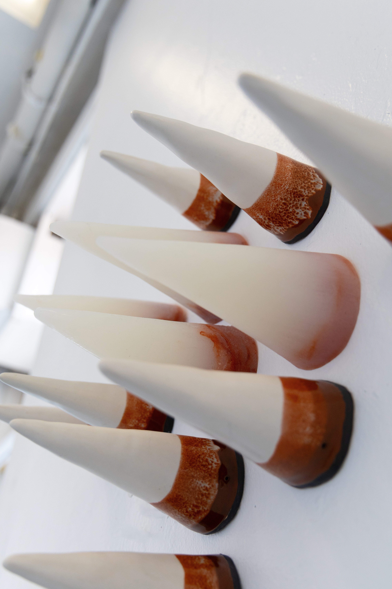
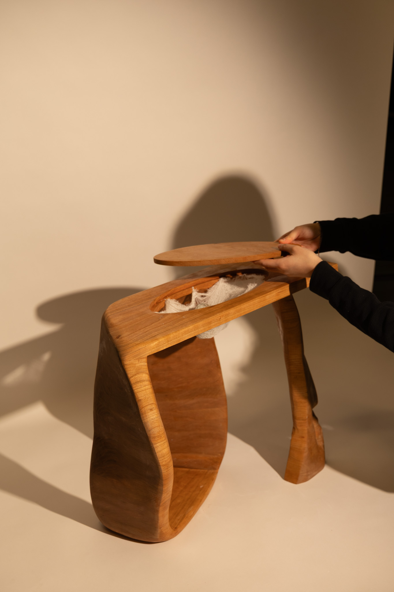
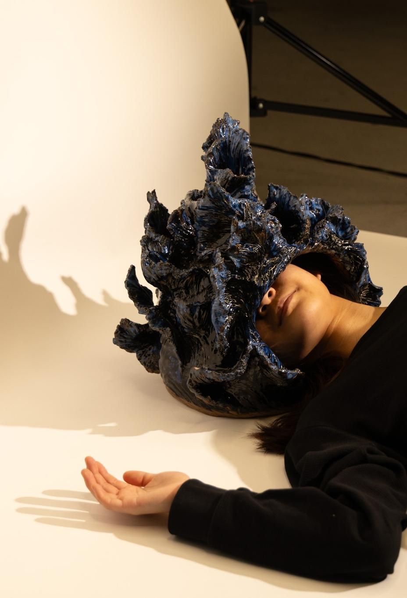

Hedgehog's Dilemma
Ceramic, Silicone · 2025
Selected works across sculptural practice, interactive systems, and digital experimentation.

Ceramic, Silicone · 2025

Cherry Wood, Gauze · 2025

Ceramic · 2025

Ceramic · 2025
The concentric rings and radial grid still reflect Apollo’s rational clarity, but the counterclockwise motion of the minutes and seconds deliberately breaks the expectation of time’s usual direction. This inversion destabilizes the viewer’s sense of order, echoing Dionysian disruption. The roly-poly form amplifies this instability with chaotic tilts, restoring balance and showing how order and chaos continuously negotiate with one another.
Time wraps continuously around a split, reversed play-button form, advancing only through its own looping motion and the viewer’s interruptions.